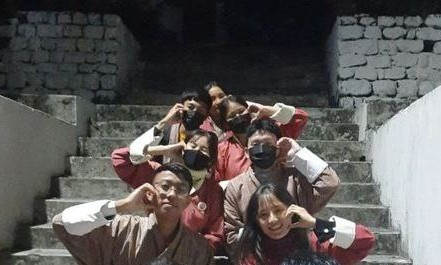

Education
-
I started my education journey from Samtse Lower Secondary School,
studying till class 1 and after that I went to Tendruk Central School, studying for only a year.
Furthermore, I also studied at Pemagatshel Middle Secondary School for a year and
after that I went to Dagana, studied at Dagapela Middle Seccondary School
for almost five whole years till I reached class 9. Then finally I came back to Samtse,
joining Samtse Higher Secondary School as a class 10 student and studied there till i graduated high school.
Finally I got to pursue further education at Samtse College of Education taking the course of
Information Communication Technology at secondary level and training as a future teacher as my career.